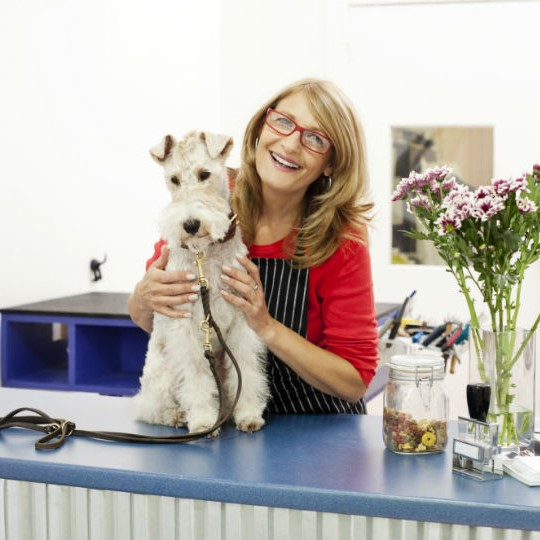

Meet Kathy!!
Kathy has been part of the team here at furry friends for over 14 years!!
Kathy studied dog grooming Level 5 and 6 in St Finbars College, Dublin.
She loves every minute of her job
If your gorgeous dog needs to schedule their next groom, please call Grace on
012345678